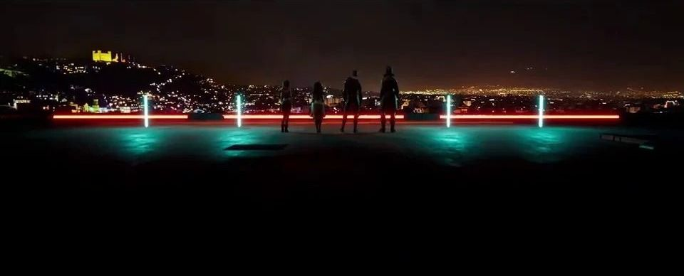

Accueil
Projets
Studio
Contact
Écrire au studio
Projets
/ Ratouh 2.0
Ratouh 2.0
Quatre personnages 3D sur les toits d'une ville la nuit.
Année
2022
Type
Clip en animation 3D
Cadre
Pour MDJ

← Ploutos
Dajouh Pixel →